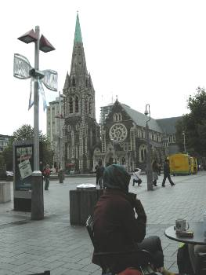
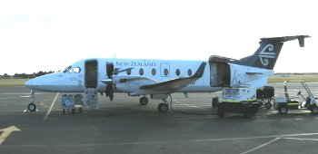

釣行日誌 ＮＺ編 「翡翠、黄金、そして銀塊」
アルプスを越えてホキティカへ
2010/11/22(MON)
夜の中をジェットはひたすら南へ飛ぶ。映画の途中でチキンの夕食が出たのでそれをたいらげ、オレンジジュースをいただきつつ再び映画に没頭する。「インビクタス」が終わったので、Air Show の画面を見ると、機は太平洋のまっただ中を南下してゆく。1997年に初めてニュージーランド南島西海岸を訪れた時と思うと、旅客機の装備は大きく進歩したものだと思えた。あれから13年。僕の人生を大きく変えた旅から13年である。月日は流れた。ニュージーランドの鱒釣りに感動して書き記した釣行記は、拙いホームページの記事ではあったが多くの人に読んでもらえて、いろいろな感想をメールで頂いた。その貴重な読者の皆様の一人が鰐部さんである。鰐部さんから南島西海岸の釣りに関しての質問メールを頂いたのは、98年頃だったろうか？それまでワナカやカンタベリー地方の釣りを楽しんで来られた鰐部さんは、南島西海岸の原生林での釣りにいたく興味を示され、いろいろな質問を書いてきてくれた。僕はできる限り詳しく書いたのだが、その後、鰐部さんも、ホキティカのブリント・トロレイ氏にフィッシングガイドをお願いして、原生林での釣りを堪能されたという次第である。その後も鰐部さんとはメールを介してのやりとりが続き、ある時には僕の実家まで訊ねてきてくれて、一緒に温泉に入ったりするようになった。そして、会うたびに、二人でいつかは一緒にウェストランドを釣ろうと言うのが合い言葉のようになっていたのである。今回の旅では、旅行代理店に勤務している鰐部さんにすっかりお世話になってしまい、あれこれと細かな所までフォローして頂き、晴れて出発の運びとなった。鰐部さんがどれくらいありがたい読者かというと、彼は僕の97年の釣行記をプリントアウトして、ニュージーランド釣行のたびに読み返してくれているのである。涙が出るほどありがたい話である。
次の映画を見ようかと思ったが、睡眠不足は大敵なので持病の薬を飲んでしっかり眠ることにした。しかし、ジェットエンジンの音が気になってなかなか機内では寝付けず、とうとう一睡もできないまま朝食となり、やがてオークランド国際空港に向けて飛行機がゆっくりと降下し始めた。NZ98便はほぼ定刻通り、早朝 5:30にオークランドに着いた。気になっていた入国審査も、ウェーダーとウェーディングシューズを見せただけで無事通過し、クライストチャーチ行きのNZ 513便 7:50発に乗り換えて今度は南島に向けて飛び立った。11年ぶりにクライストチャーチに着いたのは朝の 9:10であった。鰐部さんと空港内の中華料理店で再びきつねうどんを食べた後、僕は荷物が大きかったので、空港内にある Luggage Solutions という旅行用品店兼手荷物預かり所へバックパックを預け、身軽になって空港を出た。空港には鰐部さんのビジネスパートナーであるジュディさんが迎えに来てくれており、ダウンタウンまで乗せていってもらうこととなった。大聖堂のすぐそばで車を下ろしてもらうと、鰐部さんは語学学校の仕事や銀行口座開設などの用事を済ませるためにジュディさんと出かけていった。夕方5:30に再び空港で落ち合うこととし、僕は Southern Encounter Aquarium and Kiwi House という小さな水族館に向かった。ここではニュージーランド原産の淡水魚や海水魚などが見られるのである。もちろんブラウントラウトやレインボートラウトなども展示されている。昔見たビデオでは、ここでフライタイイングの実演があったのだが、今回はそれは無かった。館内には小さな劇場があって、ＮＺの野生動物に関した映画を上映していた。だれも見物客がいなかったので、一番後ろの長椅子に横たわり、しばし仮眠を取る。けれどやっぱり眠れない。仕方がないので館内を一回りしてみる。ワイカト大学での研究テーマだった回遊性の淡水魚「ホワイトベイト」の親魚、ココプやイナンガの展示が懐かしかった。展示と入り口近くの土産物をざっと見た後で、絵葉書を一枚買った後、クライストチャーチの顔とも言える大聖堂に向かう。と言っても水族館のすぐ前が大聖堂なのであるが。ここでは広場横のファストフードの店でジュースとパイを買い、外のテーブルで早めの昼食とする。大聖堂を見ながらパイを食べつつ絵葉書を書く。この時、2011年2月22日の大地震でこの街が大きな被害を受け、大聖堂の塔が崩れ落ちることになろうとは夢想だにしていなかった。

絵葉書を書き終えて投函し、今度は通りの角にある薬局に入り、手荒れ防止用のクリームを購入する。仕事のせいかなぜか手荒れがひどく、この数週間ずっと悩まされていたのである。クリームを首尾良く購入し、次は夜食である。鰐部さんとの今回の釣行では、ホキティカの B&B に宿泊する。これはまぁ民宿のようなもので、夕食は付いていないが朝食は出る。ベッド＆ブレックファストという形態の宿泊施設である。夜中に腹が減ると寝付けなくなってしまうので、夜食としてチョコレートバーの好きな銘柄、スニッカーズを20本ほど購入する。全部食べたらかなり体重が増えると思う。これで準備は良し。他に行く所も無いので、早めに空港に戻ることにしてシャトルバスに乗り込む。
空港に戻ったのは午後2時頃であった。鰐部さんはどうしているかななどと思いつつ椅子でウトウトしてしまう。4時過ぎになって鰐部さんの姿がロビーに現れ、二人してホキティカ行きの便を待つ。ようやくNZ 2876便の出発時刻19:00が近づき、搭乗口へ行くと、思っていたよりもはるかに小さなプロペラ機が乗客を待っていた。ビーチクラフト1900D機は、乗員２名、乗客19名を乗せて飛ぶコミューター機で、操縦室が丸見えの可愛い旅客機であった。

座席は後ろ寄りで、またまた鰐部さんの前に座ることになった。定刻通りに滑走路を走り出した機体はなめらかな離陸後ぐんぐんと上昇し、クライストチャーチ近郊の牧草地帯が眼下に広がった。やがて景色は山岳地帯となり、アルプスの山々を眺めながら35分間の快適な空の旅を終え、ホキティカの空港に無事ビーチクラフトは着陸した。ロビーに出ると、おお！立派に成長したディーン君が迎えに来てくれていて、三人は再会を喜び合った。ディーン君も今や30歳となっており、今年の二月に結婚したばかりであった。僕が前に会った時は、1999年、彼が19歳の時であり、その時はまだ少年の面影が残っていた。いやはや時の経つのは早いものである。三人は足早にディーン君のトヨタに荷物を載せ、空港のすぐ近くの B&B へと向かった。そこは Koru cottage という名前であり、こぢんまりとしていたが室内は綺麗で快適な宿だった。
その夜はホキティカの町中にあるインド料理店でカレーのテイクアウトとビールを買い込み、久しぶりの再会に楽しい夕食となった。さっそく明日からの釣りの作戦会議が開かれ、明日はヘリコプターで山岳渓流を釣ることとなった。僕にとっては三度目のヘリ・フィッシングであり、夢と希望に胸がふくらむ。おなかの方もめいっぱいチキンカレーを食べてふくらみ、どっと疲れが出てきてベッドに倒れ込んだ。明日はいよいよ釣りが始まる。
釣行日誌ＮＺ編 目次へ
サイトマップ
ホームへ
お問い合わせ